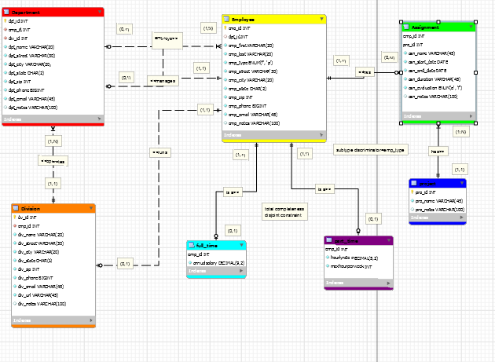
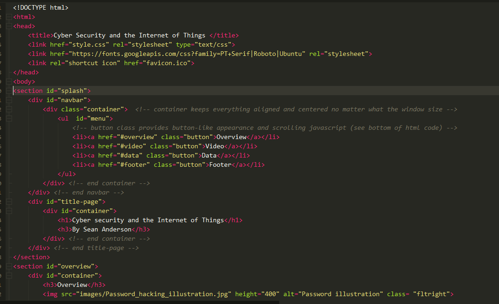

Bulding Bridges Between People and Technology
I am an IT security student with a passion for making a robust system and network security. I built and troubleshooted over 30 computers, learned Russian culture and language , and I have programming experience in C++ and Java. I have built 3 websites, made 2 company ERDS, and I have worked with servers. I will be graduating in May 2020. I am looking forward to possibly contacting you soon.
Projects

